| 日付 | 2010年4月18日（日） |
|---|---|
| 山域 | 西上州 |
| メンバー | 友人（男1女1） |
| 山行形態 | 日帰り |
| アクセス | 電車、バス |
| ルート (Map) | 藤沢→笠丸山登山口→笠丸山→地蔵峠→笠丸山登山口 |
4月に入りアカヤシオの花が咲く季節になってきたので、
アカヤシオで有名な笠丸山に行ってみることにする。
笠丸山の登山道入口までは電車で2時間半、そこからバスで2時間かかる。
果てしなく遠いが、車窓からは満開の桜の木が見える。
何度かこの路線は通っているが、この季節は特に風景が素晴らしい。
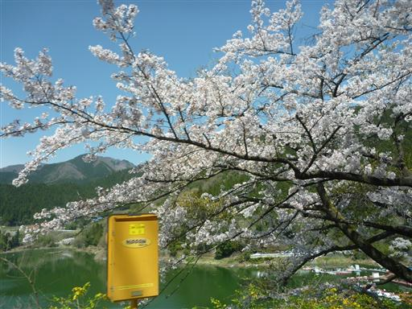
神流川をせき止めた神流湖。湖岸には桜の花がたくさん咲いていて、観光地になっているようだ。
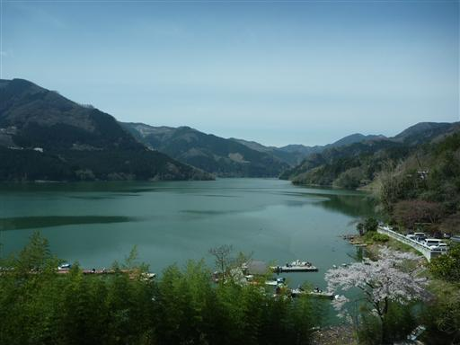
清流・神流川の脇にはツツジが赤い花を咲かせている。
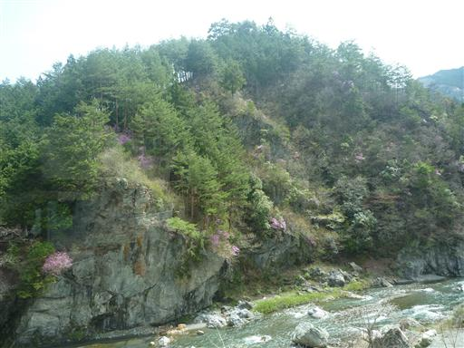
10:54 藤沢バス停到着。標高510m。
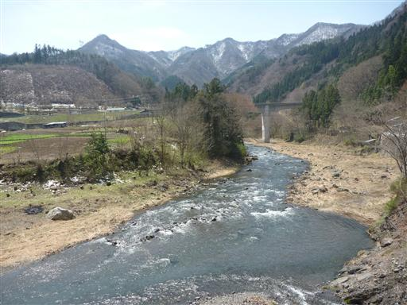
最初は1時間程度車道を歩く必要がある。
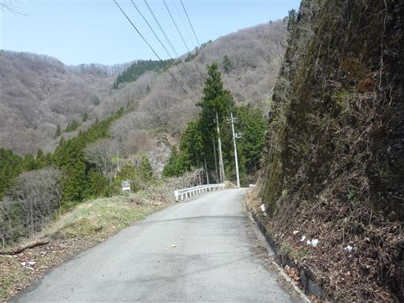
奥の方に笠丸山が見えてきた。ツツジはあまり咲いていないように見える。
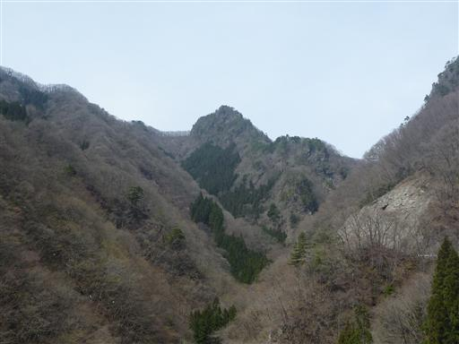
車道脇にわずかながらツツジの花が咲いている。アカヤシオではなさそうだ。
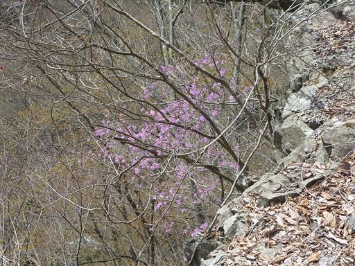
フェンスに巻きつきながら伸びる木。
巻きついているのは蔓ではなく堅い木の幹だ。
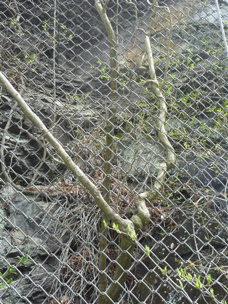
ようやく笠丸山登山口に到着する。
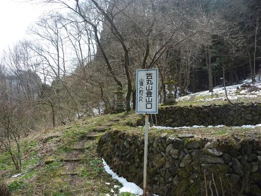
登山道には若干雪が積もっている。今週末に降った季節外れの大雪の影響だ。
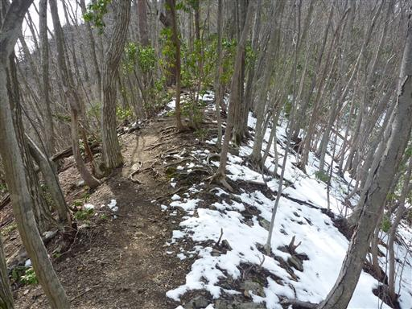
低山ではあまり見かけない白樺の木が何本か立っている。
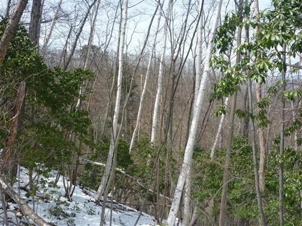
1時間ほどで笠丸山の山頂に到着。山頂標識と神社があるが、
本当の山頂はもう少し進んだところにある。
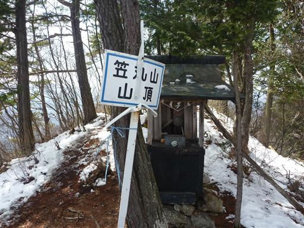
ここからは素晴らしい展望が広がる。目の前に見えるのは両神山。
両神山も雪で白く染まっている。
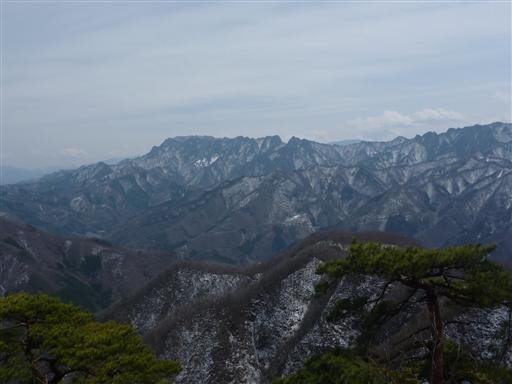
この辺りがアカヤシオの素晴らしいところなのだが、全く咲いていない。
少し季節が早いのと、前の大雪でやられてしまったようだ。
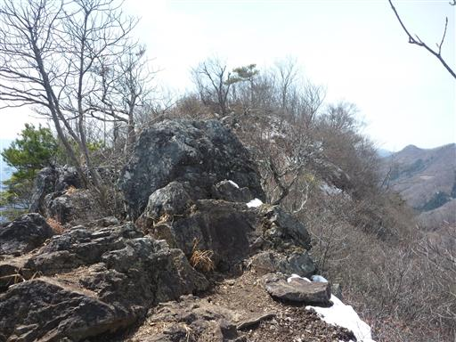
わずかに蕾だけが点在している。
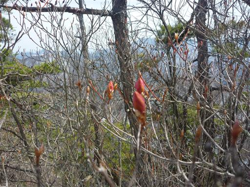
13:12 笠丸山山頂到着。標高1189m。
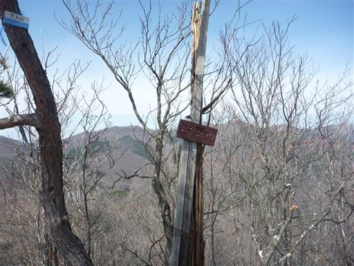
比較的狭い山頂。山頂に着いたときは大混雑だったが、
地元上野村が主催しているハイキング企画のパーティとのことだった。
リーダーは打田鍈一さんで、西上州のガイドブックなどを執筆している、なかなかの有名人だ。
西上州好きで前から打田さんの存在は知っていたので、記念に一緒に写真を撮ってもらった。
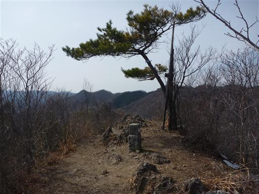
思わぬ収穫を手にした後、上野村パーティと別れ下山を開始する。
彼らとはちょうど逆ルートのようだ。

地蔵峠に立つ巨木。
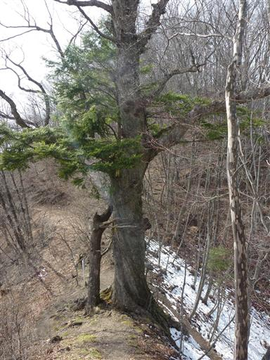
巨木の下には小さな地蔵が祀られている。
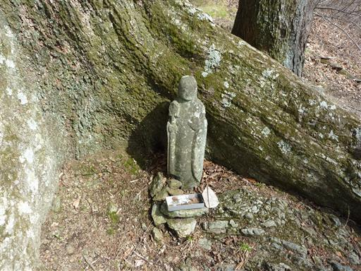
下山道は途中から沢沿いの道になる。神流川に注ぐ小さな沢だ。
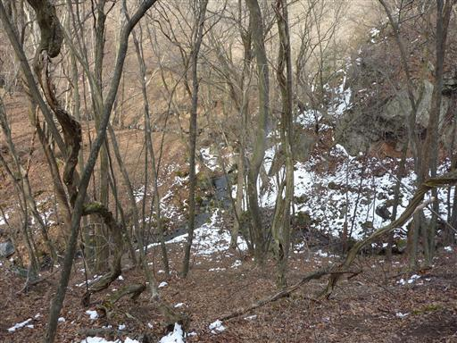
15:07 笠丸山登山口に下山。標高785m。
下山地点ではわずかにツツジが咲いている。
上野村パーティもちょうど下山したところで、藤沢バス停まで送迎バスで送ってもらう。
神奈川から電車とバスで来たと話したら、驚かれてしまった。
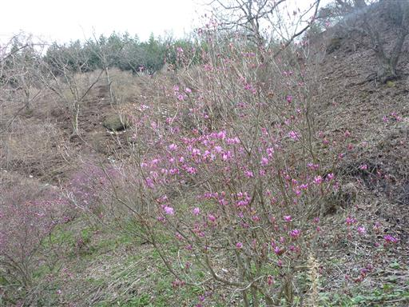
帰りのバスもまた長い。万場で10分休憩があったので、透き通るような神流川の清流を眺める。
アカヤシオは見ることができなかったが、バスからの景色や山頂での出会いなど、楽しい山行だった。
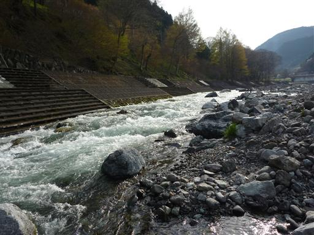